采购机票的流程如下图：
其中，步骤1、2由采购用户操作。步骤3由出票方操作，采购用户只需等待即可。
系统提供了两种创建订单的方式。
方式一：通过全中文界面网页形式查询可用航班，然后输入乘客信息订座。系统会调用航信配置（此配置由分销商提供）生成订座编码以及订单。订座成功后，通过支付宝完成支付，出票方就会收到通知进行出票。
这种方式适合对Eterm指令不熟悉的用户。优点是操作简单易懂。
方式二：用户在eterm中自行订座，产生PNR编码。然后在平台上通过PNR导入功能创建订单。然后通过支付宝完成支付，出票方就会收到通知进行出票。
这种方式适合熟悉Eterm指令并有航信配置的用户，优点是简单快捷。
下面我们就分别来看两种下订单方式。
全中文界面网页预订创建订单分为4步：1.查询可用航班；2.选择航班和舱位；3.输入乘客信息；4.确认订单；5创建订单 。
点击左侧菜单“机票采购管理”->“航班查询及预定”栏目，右侧页面会出现机票查询界面。在此界面输入“出发城市”“抵达城市”“出发日期”，可以查询到当天可用的所有航班。
a. 输入查询条件
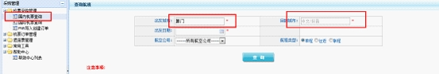
b.点击“ 立即查询”进行查询
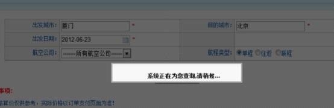
c.系统列出所有可用航班
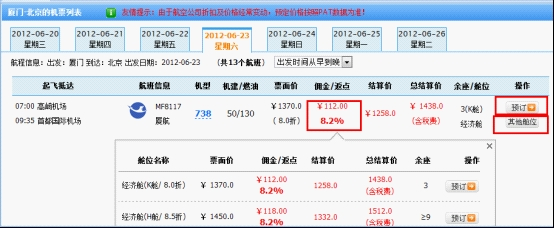
点击所选航班对应舱位的预订按钮，系统打开预订页面供用户输入乘客信息和订票人联系信息。
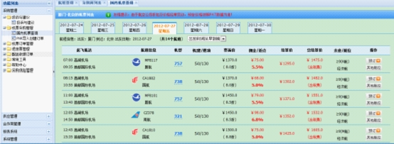
每位乘客必须输入姓名，证件类型，证件号和手机号码
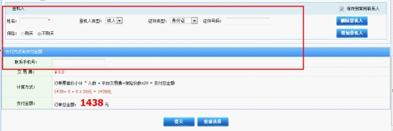
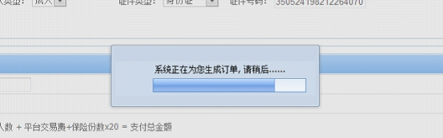
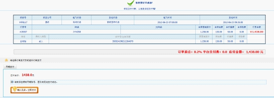
接下来介绍另一种创建订单的方式，用已在航信系统订好座的PNR编码导入订单。

平台集成了支付宝的网上支付接口。
用户要进行网上支付，需要预先开通银行卡的网银支付功能
若有问题，可以联系支付宝服务专线：0571-88158090 服务时间：周一至周五（9：00-18：00）
下面介绍如何支付:
新创建的订单都在“机票订单管理”的“待支付订单”列表

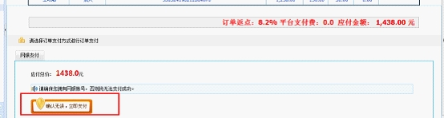
进入支付宝支付界面，可选择“支付宝余额付款”或“使用网上银行付款”或“支付宝卡通”或“网点付款”
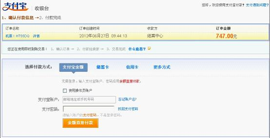
支付完成后，订单会转移到“在线订单管理”的“当日最新订单”列表
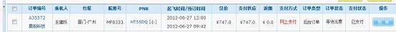
供票商出完票后，订单状态变为
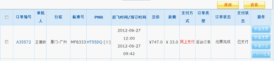